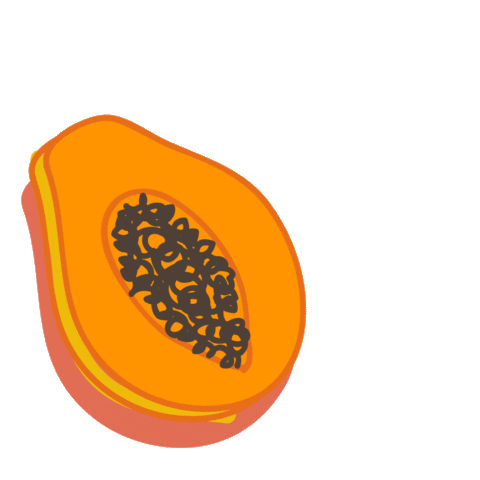

- Papaya is the fruit of the Carica papaya plant.
- Papayas are shaped similar to pears and can be up to 20 inches (51 cm) long.
- The skin is green when unripe and orange when ripe, while the flesh is yellow, orange or red. The fruit also has many black seeds, which are edible but bitter.
- Papayas contain high levels of antioxidants vitamin A, vitamin C, and vitamin E.
- Diets high in antioxidants may reduce the risk of heart disease.
- The antioxidants prevent the oxidation of cholesterol.
- When cholesterol oxidizes, it's more likely to create blockages that lead to heart disease.
- Papaya is POSSIBLY UNSAFE when taken by mouth in large amounts or when applied to the skin as papaya latex.